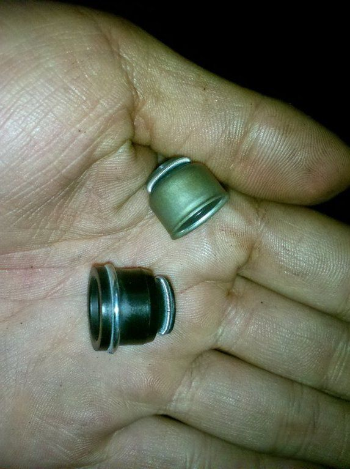
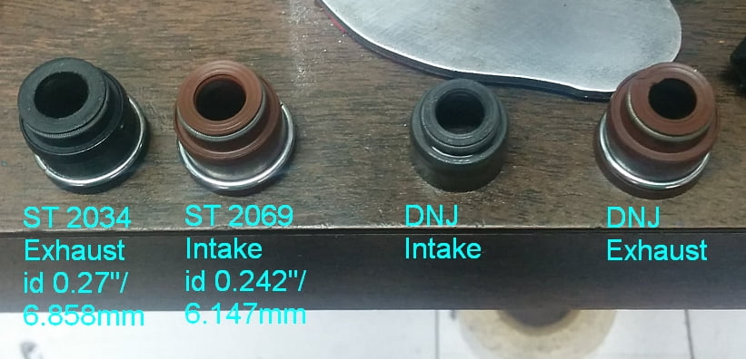

-
Hi Guys,
I have in my hand two valve stem oil seals: one is all rubber while the other is smaller and has a metal case around it. I am replacing an exhaust valve stem seal. The old seal is identical to the larger, all-rubber one. However, I remember reading that the smaller seal with the metal case is the right seal for my repair.

Let me know so I can pop it in!
-
Re: Difference between Exhaust and Intake Valve Stem Oil Sea
After some thought, the all rubber is exhaust…intake is metal. Do believe so.- VG30DET (HE341) 86 300ZX - 1982 280ZX Turbo - Headered NA 1986 300ZX 2+2 - 2000 Xterra - -
Any reason in particular? -
Bump. :O -
Re: Difference between Exhaust and Intake Valve Stem Oil Sea
Agree, I just did mine. Question though. Are you replacing just one?michaelp wrote: After some thought, the all rubber is exhaust…intake is metal. Do believe so. -
Yes. I have already replaced it with the recommended seal. My car is still smoking. It might be an internal oil leak after all… ugh right after a head-gasket change :banghead
Thanks for clarifying, though! -
You replaced just one? -
I am guessing I should replace them all? I have the other stem seals at my disposal… -
That's what I did. Also check your valve guides for excessive play. -
the vg30et is weird this way.
the one with the large base has a 6mm inside diameter.
the one with the smaller metal encased body has a 7mm inside diameter.
the large flanged base is for the exhaust valve, which is thinner than the intake valve (again, weird for a exhaust valve that is supposed to be more heat resistant).
racinjitter and i discussed this about 2 years ago, because in a normal world (i.e. - most engines) the metal surround would be for the sodium filled exhaust valves to carry away heat. for some reason, nissan did it backwards on this motor. then again, a rubber insulator would prevent heat sinking anyways..... moving on…
if you really want to avoid this issue, you can use the VITON blue coloured ford seals or the nissan rb26 VITON seals (can't remember the ford engine it's from right now, but a modular ford motor comes to mind). They are all 6mm and you can use them on both exhaust and intake valves. Something tells me that COSWORTH makes a 24 valve kit that you should be able to split with someone looking to replace valve seals as well. RHD Japan, possibly. It's been quite some time and I went with a genuine nissan "Conversion gasket kit" which contained all the proper seals, with proper labels rather than a shitty cardboard box with mislabelled part numbers (I.e. felpro, which makes great seals, but has poor documentation).
if you have a set of 12 of the wide flanged 6mm base valve seals, you can use them on 7mm valve stems and you shouldn't have issues with oil seeping. They will eventually wear into a 7mm inside diameter. if you mismatch and put the 7mm seals on the 6mm valve stems, you will eventually have oil seepage on start up and possible during vacuum after a couple thousand heat cycles.
heed the word of michaelp. metal is for intake, wide flanged rubber is for exhaust. -
I also noticed that the factory intake stem seals were about 2 mm taller than the new ones I am putting in. The metal cups have the same dimensions for both seals, but it seems like the exposed rubber section of the seals is taller in the original. Is this something to worry about? Valve stems have a fixed diameter near the stem seals so it shouldn't be a biggie? -
as long as they make a dull clicking feel when you tap them on and the valve has some resistance going up and down- it should be sealed. the part that clicks onto the valve and the little round portion at the top that contact the valve itself are the only really important parts. -

The two on the left are Sealed Power, the two on the right came with a rebuild kit
and are similar to what a machine shop installed on some heads i had machined,
i assume they are equivalent to DNJ.
I purchased the Sealed Power valve seals which i thought would be an upgrade.
While the DNJ seem to fit fine, the Sealed Power do not fit snug at all, and the dimensions
seem to be the reverse of what careless mentioned above about the intake valve diameter
being larger than the exhaust.
Anyone else run into this?
84 AE/Shiro #683/Shiro #820/84 Turbo

Copyright © 2006–. All rights reserved. Privacy Policy